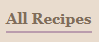
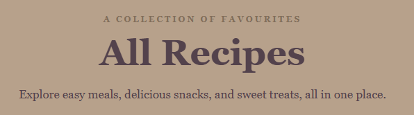
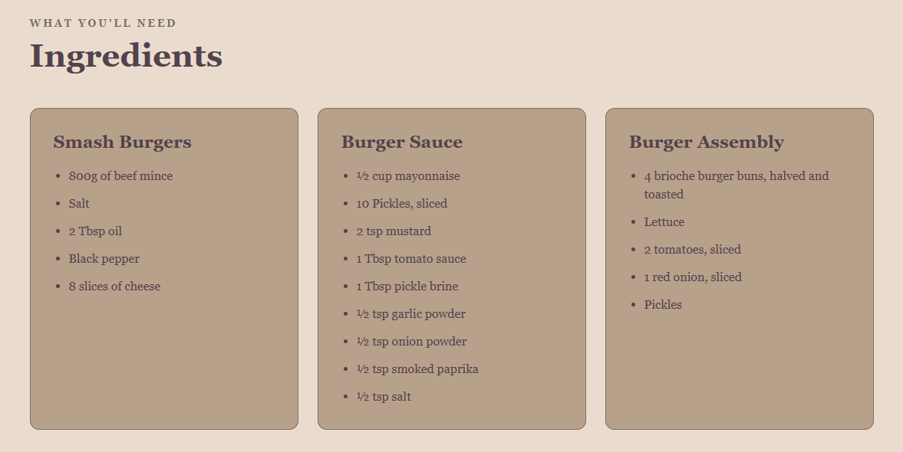
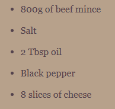
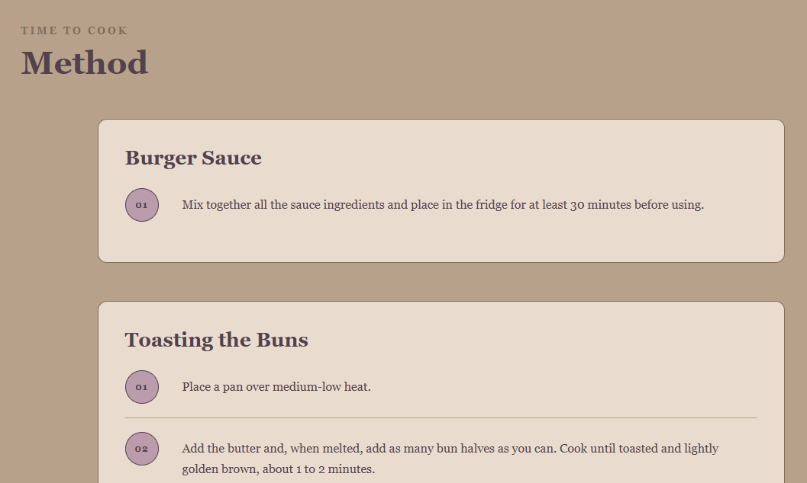
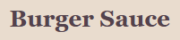
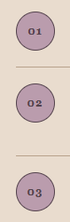
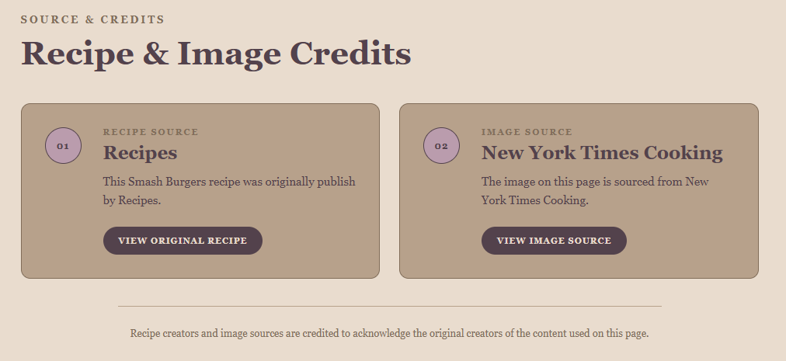
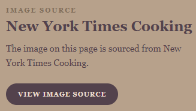
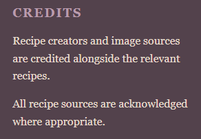

Need some help?
Questions
Find answers to some common questions at Chloe's Recipes.
How do I find a recipe?
Step 1: Find "All Recipes"
Click the "All Recipes" button in the navigation menu at the top of the website.

Step 2: Browse the recipe page
This will take you to the All Recipes page, where you can browse through the different recipe categories.

Step 3: Choose a recipe
Once you find something you like, click on the recipe to view its ingredients, instructions and other information.
What types of recipes are available?
Main Meals
These recipes are designed for lunch or dinner and include filling dishes that can be enjoyed as a main meal.

Snacks
Snack recipes are smaller dishes that are great for when you want something quick and tasty.

Sweet Treats
Sweet treats include desserts, cookies and other recipes for when you're craving something sweet.

Where can I find the ingredients?
Find the recipe you want
First, select the recipe you would like to make from the All Recipes page.
Look for the Ingredients section
Each recipe page has an Ingredients section that lists everything you need to make the recipe.

Check the quantities
The ingredient list includes the quantities needed for the recipe, making it easier to prepare everything before you start cooking.

Where can I find the cooking instructions?
Open your chosen recipe
After selecting a recipe, scroll down the recipe page to find the cooking instructions.

Find the Method section
The Method section explains each step you need to follow to prepare and cook the recipe.

Follow the steps
The instructions are numbered so you can work through the recipe one step at a time.

Where can I find recipe credits?
Recipe creators
Recipe creators are acknowledged alongside the relevant recipe information. This makes it clear where each recipe originally came from.

Image sources
Images used throughout the website are also credited where required.

Website footer
Additional information about recipe creators and image sources can also be found in the Credits section of the website footer.
